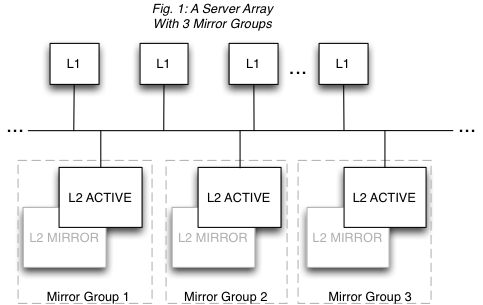

Definitions and Functional Characteristics
The major components of a Terracotta installation are the following:
 Cluster
Cluster - All of the Terracotta server instances and clients that work together to share application state or a data set.
Terracotta client - Terracotta clients run on application servers along with the applications being clustered by Terracotta. Clients manage live shared-object graphs.
Terracotta server instance - A single Terracotta server. An
active server instance manages Terracotta clients, coordinates shared objects, and persists data. Server instances have no awareness of the clustered applications running on Terracotta clients. A mirror (sometimes called "hot standby") is a live backup server instance which continuously replicates the shared data of an active server instance, instantaneously replacing the active if the active fails.
Mirror servers add failover coverage within each mirror group.
Terracotta mirror group - A unit in the Terracotta Server Array. Sometimes also called a "stripe," a mirror group is composed of exactly one active Terracotta server instance and at least one mirror Terracotta server instance. The active server instance manages and persists the fraction of shared data allotted to its mirror group, while each mirror server in the mirror group replicates (or mirrors) the shared data managed by the active server.
Mirror groups add capacity to the cluster. The mirror servers are optional but highly recommended for providing failover.
Terracotta Server Array - The platform, consisting of all of the Terracotta server instances in a single cluster. Clustered data, also called in-memory data, or shared data, is partitioned equally among active Terracotta server instances for management and persistence purposes.
Tip: | Nomenclature - This documentation may refer to a Terracotta server instance as L2, and a Terracotta client (the node running your application) as L1. These are the shorthand references used in Terracotta configuration files. |
Figure 1 illustrates a Terracotta cluster with three mirror groups. Each mirror group has an active server and a mirror, and manages one third of the shared data in the cluster.
A Terracotta cluster has the following functional characteristics:
Each mirror group automatically elects one active Terracotta server instance. There can never be more than one active server instance per mirror group, but there can be any number of mirrors. However, a performance overhead may become evident when adding more mirror servers due to the load placed on the active server by having to synchronize with each mirror.
Every mirror group in the cluster must have a Terracotta server instance in active mode before the cluster is ready to do work.
The shared data in the cluster is automatically partitioned and distributed to the mirror groups. The number of partitions equals the number of mirror groups. In Fig. 1, each mirror group has one third of the shared data in the cluster.
Mirror groups cannot provide failover for each other. Failover is provided within each mirror group, not across mirror groups. This is because mirror groups provide scale by managing discrete portions of the shared data in the cluster -- they do not replicate each other. In Fig. 1, if Mirror Group 1 goes down, the cluster must pause (stop work) until Mirror Group 1 is back up with its portion of the shared data intact.
Active servers are self-coordinating among themselves. No additional configuration is required to coordinate active server instances.
Only mirror server instances can be hot-swapped in an array. In Fig. 1, the L2 MIRROR servers can be shut down and replaced with no affect on cluster functions. However, to add or remove an entire mirror group, the cluster must be brought down. Note also that in this case the original Terracotta configuration file is still in effect and no new servers can be added. Replaced mirror servers must have the same address (hostname or IP address). If you must swap in a mirror with a different configuration, see
Changing Topology of a Live Cluster.